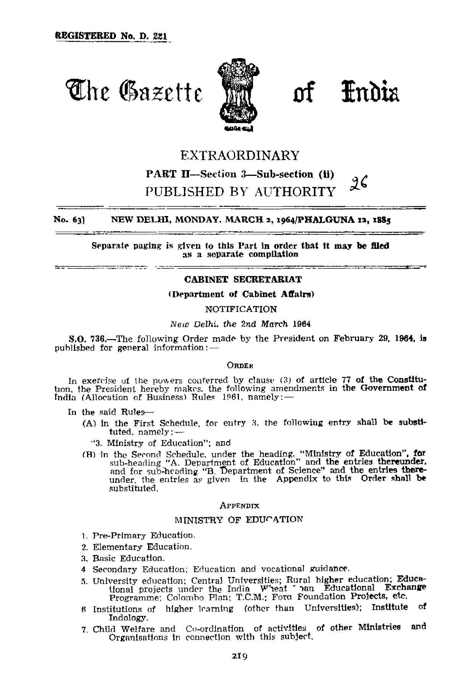
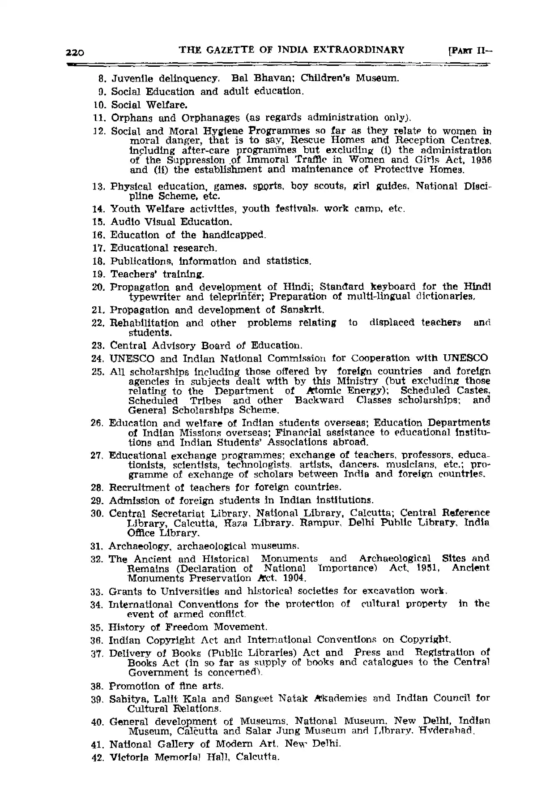
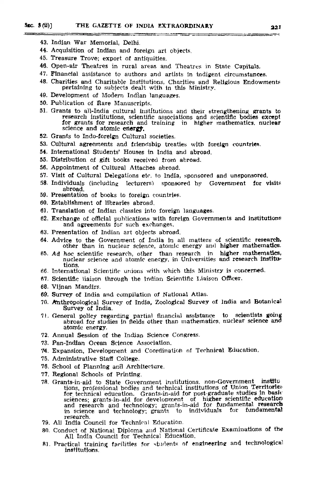
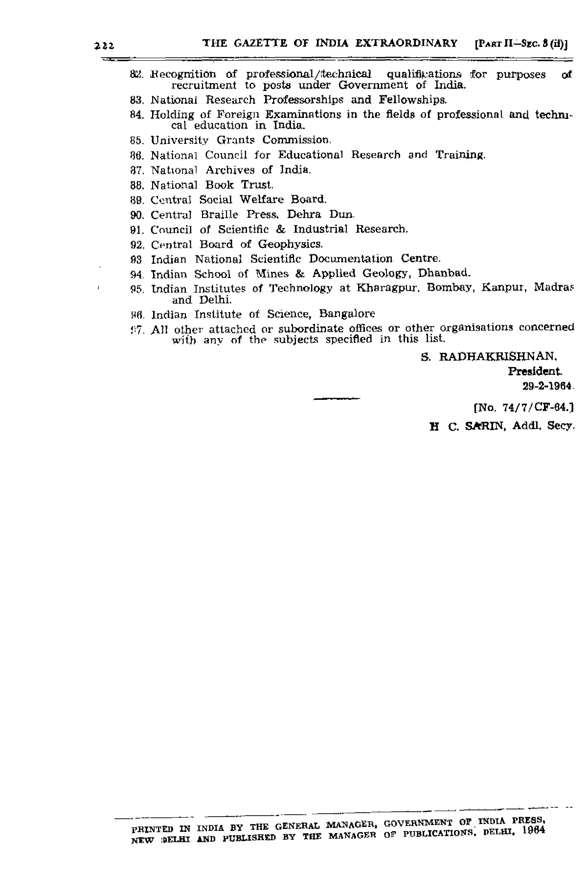

Amendment #26 (S.O.736, 1964)
2 changes: 1 to the First Schedule, 1 to the Second Schedule. 2 applied
The order, page by page
Page 1 of 4

12Schedule 1 › entry 3
- 3. Ministry of Education
applied at schedule 1 › ministry 3 in the Rules after #26
Schedule 2 › Ministry of Education › Department of Education; Schedule 2 › Ministry of Education › Department of Science
- MINISTRY OF EDUCATION
- 1. Pre-Primary Education.
- 2. Elementary Education.
- 3. Basic Education.
- 4. Secondary Education; Education and vocational guidance.
- 5. University education; Central Universities; Rural higher education; Educational projects under the India Wheat Dan Educational Exchange Programme; Colombo Plan; T.C.M.; Fora Foundation Projects, etc.
and 92 more
- 6. Institutions of higher learning (other than Universities); Institute of Indology.
- 7. Child Welfare and Co-ordination of activities of other Ministries and Organisations in connection with this subject [PART II-
- 8. Juvenile delinquency. Bal Bhavan; Children's Museum.
- 9. Social Education and adult education.
- 10. Social Welfare.
- 11. Orphans and Orphanages (as regards administration only).
- 12. Social and Moral Hygiene Programmes so far as they relate to women in moral danger, that is to say, Rescue Homes and Reception Centres. including after-care programmes but excluding (1) the administration of the Suppression of Immoral Traffle in Women and Girls Act, 1956 and (11) the establishment…
- 13. Physical education, games, sports, boy scouts, girl guides, National Discipline Scheme, etc.
- 14. Youth Welfare activities, youth festivals. work camp, etc.
- 15. Audio Visual Education.
- 16. Education of the handicapped.
- 17. Educational research.
- 18. Publications, information and statistics.
- 19. Teachers' training.
- 20. Propagation and development of Hindi; Standard keyboard for the Hindi typewriter and teleprinter; Preparation of multi-lingual dictionaries.
- 21. Propagation and development of Sanskrit.
- 22. Rehabilitation and other problems relating to displaced teachers and students.
- 23. Central Advisory Board of Education.
- 24. UNESCO and Indian National Commission for Cooperation with UNESCO
- 25. All scholarships including those offered by foreign countries and foreign agencies in subjects dealt with by this Ministry (but excluding those relating to the Department of Atomic Energy); Scheduled Castes Scheduled Tribes and other Backward Classes scholarships; and General Scholarships Scheme.
- 26. Education and welfare of Indian students overseas; Education Departments of Indian Missions overseas; Financial assistance to educational institutions and Indian Students' Associations abroad.
- 27. Educational exchange programmes; exchange of teachers, professors, educationists, scientists, technologists, artists, dancers, musicians, etc.; programme of exchange of scholars between India and foreign countries.
- 28. Recruitment of teachers for foreign countries.
- 29. Admission of foreign students in Indian institutions.
- 30. Central Secretariat Library, National Library, Calcutta; Central Reference Library, Calcutta, Raza Library. Rampur, Delhi Public Library, India Office Library.
- 31. Archaeology, archaeological museums.
- 32. The Ancient and Historical Monuments and Archaeological Sites and Remains (Declaration of National Importance) Act, 1951, Ancient Monuments Preservation Act, 1904.
- 33. Grants to Universities and historical societies for excavation work.
- 34. International Conventions for the protection of cultural property in the event of armed conflict.
- 35. History of Freedom Movement.
- 36. Indian Copyright Act and International Conventions on Copyright
- 37. Delivery of Books (Public Libraries) Act and Press and Registration of Books Act (in so far as supply of books and catalogues to the Central Government is concerned).
- 38. Promotion of fine arts.
- 39. Sahitya, Lalit Kala and Sangeet Natak Akademies and Indian Council for Cultural Relations.
- 40. General development of Museums. National Museum. New Delhi, Indian Museum, Calcutta and Salar Jung Museum and Library. Hyderabad
- 41. National Gallery of Modern Art, New Delhi.
- 42. Victoria Memorial Hall, Calcutta. SEC. 3 (i)]
- 43. Indian War Memorial, Delhi
- 44. Acquisition of Indian and foreign art objects
- 45. Treasure Trove; export of antiquities.
- 46. Open-air Theatres in rural areas and Theatres in State Capitals
- 47. Financial assistance to authors and artists in indigent circumstances.
- 48. Charities and Charitable Institutions, Charities and Religious Endowments pertaining to subjects dealt with in this Ministry.
- 49. Development of Modern Indlan languages.
- 50. Publication of Rare Manuscripts.
- 51. Grants to all-India cultural institutions and their strengthening grants to research institutions, scientific associations and scientific bodies except for grants for research and training in higher mathematics, nuclear science and atomic energy.
- 52. Grants to Indo-foreign Cultural societies.
- 53. Cultural agreements and friendship treaties with foreign countries.
- 54. International Students' Houses in India and abroad.
- 55. Distribution of gift books received from abroad.
- 56. Appointment of Cultural Attaches abroad.
- 57. Visit of Cultural Delegations etc. to India, sponsored and unsponsored.
- 58. Individuals (including lecturers) sponsored by Government for visits abroad.
- 59. Presentation of books to foreign countries.
- 60. Establishment of libraries abroad
- 61. Translation of Indian classics into foreign languages.
- 62. Exchange of official publications with foreign Governments and institutions and agreements for such exchanges.
- 63. Presentation of Indian art objects abroad.
- 64. Advice to the Government of India in all matters of scientific research other than in nuclear science, atomic energy and higher mathematics.
- 65. Ad hoc scientific research, other than research in higher mathematics nuclear science and atomic energy, in Universities and research institutions.
- 66. International Scientific unions with which this Ministry is concerned.
- 67. Scientific liaison through the Indian Scientific Liaison Officer.
- 68. Vijnan Mandirs.
- 69. Survey of India and compilation of National Atlas.
- 70. Anthropological Survey of India, Zoological Survey of India and Botanical Survey of India.
- 71. General policy regarding partial financial assistance to scientists going abroad for studies in fields other than mathematics, nuclear science and atomic energy.
- 72. Annual Session of the Indian Science Congress.
- 73. Pan-Indian Ocean Science Association.
- 74. Expansion, Development and Coordination of Technical Education
- 75. Administrative Staff College.
- 76. School of Planning and Architecture.
- 77. Regional Schools of Printing.
- 78. Grants-in-aid to State Government institutions. non-Government institu tions, professional bodies and technical institutions of Union Territories for technical education. Grants-in-aid for post-graduate studies in basic sciences; grants-in-aid for development of higher scientific education and…
- 79. All India Council for Technical Education.
- 80. Conduct of National Diploma and National Certificate Examinations of the All India Council for Technical Education.
- 81. Practical training facilities for students of engineering and technological institutions. THE GAZETTE OF INDIA EXTRAORDINARY [Part II—Sec. 8 (if)]
- 82. Recognition of professional/technical qualifications for purposes off recruitment to posts under Government of India.
- 83. National Research Professorships and Fellowships.
- 84. Holding of Foreign Examinations in the fields of professional and techní- cal education in India.
- 85. University Grants Commission.
- 86. National Council for Educational Research and Training.
- 87. National Archives of India.
- 88. National Book Trust.
- 89. Central Social Welfare Board.
- 90. Central Braille Press, Dehra Dun
- 91. Council of Scientific & Industrial Research.
- 92. Central Board of Geophysics.
- 93. Indian National Scientific Documentation Centre.
- 94. Indian School of Mines & Applied Geology, Dhanbad.
- 95. Indian Institutes of Technology at Kharagpur, Bombay, Kanpur, Madras and Delhi.
- 96. Indian Institute of Science, Bangalore
- 97. All other attached or subordinate offices or other organisations concerned with any of the subjects specified in this list.
applied at schedule 2 › ministry MINISTRY OF EDUCATION › department A in the Rules after #26
read page break
Page 2 of 4

Page 3 of 4

Page 4 of 4

How this document was read
Edits to the reading
| Date | By | Edit | Before → after |
|---|---|---|---|
| 14 November 2026 | mukundesh | word corrected | |
| 14 November 2026 | mukundesh | word corrected | |
| 14 November 2026 | mukundesh | word removed | |
| 14 November 2026 | mukundesh | word corrected |
From the Government of India (Allocation of Business) Rules, 1961 and their amendments, as published by the Cabinet Secretariat (cabsec.gov.in), read by orgpedia. The readings of the older scanned gazettes have known gaps.